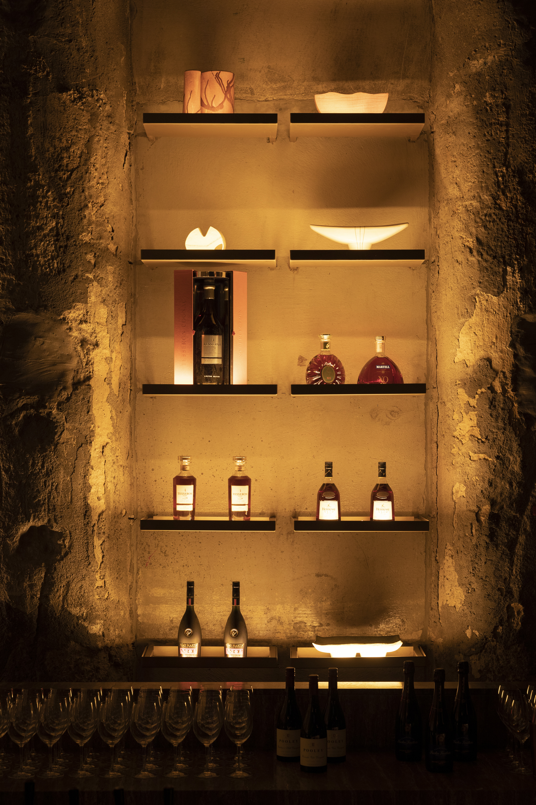

{% assign current_page = 'beverage' %}
{% assign page_title = 'Beverages' %}
{% assign pageUrl = page.path | split: "/" %}

{% include head.html %}

{% include nav.html %}


<main class="min-h-screen flex flex-col sm:flex-row">
  <div class="sm:w-45per custom-padding-left sm:pt-40 pb-20 order-2 sm:order-1">
    <div class="pl-16 pr-24 sm:pb-24 sm:px-0 w-full sm:w-1/2 flex flex-col ">
      <div class="section">
        <h2 class="title mb-5">Bar</h2>
        <p class="text">
          At the omakase bar, there’s adherence to a traditional sequence, but chef Alex Yu’s food is contemporary.
          Downstairs, dishes are bold and fiery, packed with umami, spice and sizzle.
        </p>
        <a href="#" class="block mt-4 underline uppercase underline-offset-4">
          Cocktail list
        </a>
      </div>
      <div class="section mt-12 sm:mt-20">
        <h2 class="title mb-5">Sake & Wine</h2>
        <p class="text">
          eu turpis molestie, dictum est a, mattis tellus. Sed dignissim, metus nec fringilla accumsan, risus sem
          sollicitudin lacus, ut interdum tellus elit sed risus. Maecenas eget Lorem
        </p>
        <a href="#" class="block mt-4 underline uppercase underline-offset-2">
          SAKE & WINE LIST
        </a>
      </div>
      <div class="section mt-12 sm:mt-20">
        <h2 class="title mb-5">Philosophy</h2>
        <p class="text">
          eu turpis molestie, dictum est a, mattis tellus. Sed dignissim, metus nec fringilla accumsan, risus sem
          sollicitudin lacus, ut interdum tellus elit sed risus. Maecenas eget Lorem
        </p>
        <a href="#" class="block mt-4 underline uppercase underline-offset-2">
          Stan Zheng & Ryan
        </a>
      </div>
    </div>
  </div>
  <div class="sm:w-55per sm:-z-1 max-h-screen mb-12 sm:fixed right-0 top-0 bottom-0 sm:mb-0 order-1 sm:order-2 image-section">
    
  </div>
</main>

{% include footer.html %}